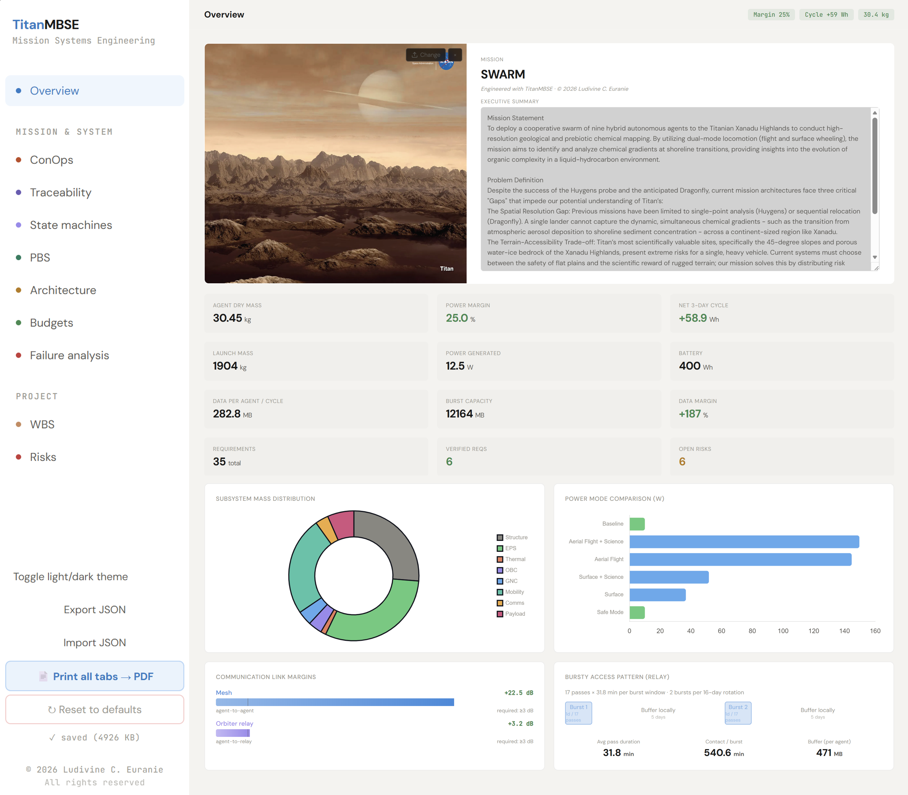
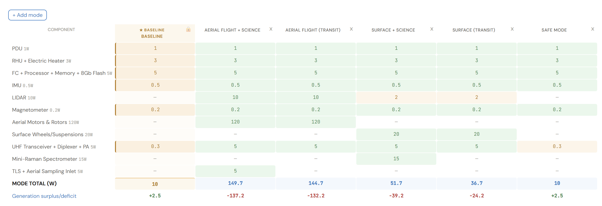
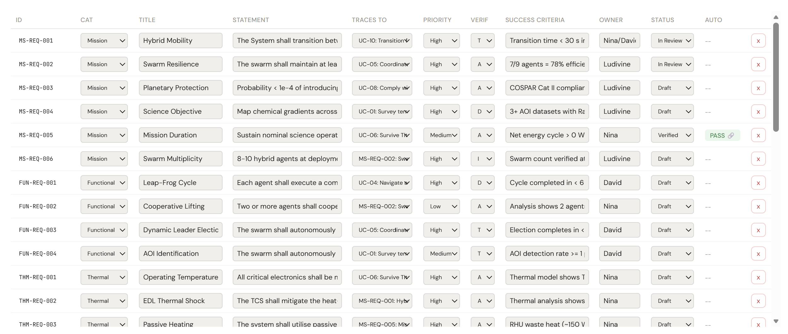
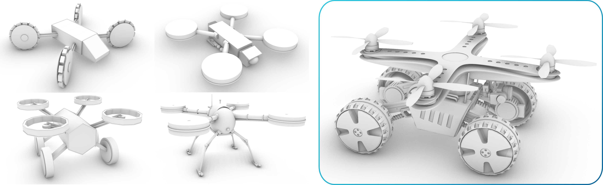
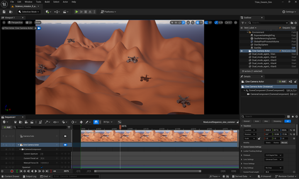

01What I built, what we built
This page covers two things at once, and it is important to be clear about which is which.
What I built (solo). TitanMBSE — a custom MBSE tool, ~7,700 lines of code in a single HTML file. ECSS-aligned, browser-native, zero install. It is the principal solo deliverable on this site. I designed it, wrote every line of it, and documented it. The tool is proprietary; the description below covers what it does and how it was built, and live demonstrations are available on request.
What we built (team of three). The Titan hybrid swarm — a cooperative nine-agent fly-and-roll mission concept for prebiotic chemistry exploration of Titan's Xanadu Highlands. The team was three: David Guevara, Nina Velimirovic, and me. David led the prototype hardware build and the communication demonstration. Nina led the CAD detailed design and the Unreal Engine simulation. I led everything else — the TitanMBSE tool, the science case and payload definition, the operations concept, the systems engineering thread (requirements, V&V, FMECA, FTA), mass / power / link budgets, the risk register, and the project-management overhead. The mission below contextualises the tool; the credits at the bottom of the page identify who did what.
02Why I built TitanMBSE
Doing MBSE properly with Cameo Systems Modeler is excellent for graduate teaching, but the licence cost, install footprint, and learning curve make it a poor fit for the kind of fast-cycle iteration a team does in the first weeks of a mission concept study. We needed something between a whiteboard and a full SysML tool: a place where mission objectives, requirements, components, mass / power / data / link budgets, risk analyses, and verification status could live together — and where editing one column updated everything downstream automatically.
So I built it. TitanMBSE runs entirely in the browser — no installation, no backend, no licence. It opened up MBSE practice to teammates who otherwise wouldn't touch a SysML tool, and it became the working environment for the entire mission concept study.

03What's inside the tool
Live parametric budgets
Mass, power, data rate, and communications link budgets that recompute as you edit the underlying component table. Margins are computed automatically against ECSS maturity-based rules; budget cells turn amber and red as they approach the limits set in the project configuration. Power has a mode-grid view (cruise / nominal / safe / science) so the operations concept and the power budget stay consistent with each other.

Requirements traceability
Stakeholder needs are entered first, then mission objectives, then derived system and subsystem requirements. Every requirement carries a verification method (test, analysis, inspection, demonstration) and a verification status. The traceability matrix view shows orphan requirements (no parent), childless requirements (no derivation), and unverified requirements at a glance — the three failure modes that ESA reviewers always look for.

Risk analyses
FMEA and FMECA per ECSS-Q-ST-30-02C, with severity × occurrence × detection scoring and automatic RPN ranking. Fault Tree Analysis per ECSS-Q-ST-40-12C, with editable AND/OR gates and quantitative probability rollup. Both views feed into the requirements engine — a critical FMECA item can be linked to the requirement that mitigates it, and the link shows up in the closure report.
Other features
Work breakdown structure with cost rollups, state machine editor, interface control list, verification matrix export, project caps and configuration controls, and one-click PDF export of the full system definition document.
04How TitanMBSE was built
The whole tool is a single static HTML file with vanilla JavaScript and CSS — no React, no build step, no npm. The constraint was deliberate: a teammate should be able to clone the repo and double-click the file, with no install, on any operating system. Project state is kept in a single in-memory object that serialises to JSON for save/load, and the views are pure functions of that object — so a budget edit re-renders only the cells that depend on it.
State changes are journalled, which gives undo/redo for free and makes the export reproducible: the PDF generator walks the same state object the views use, so the document and the live tool can never disagree.
05The mission the tool was built for
Titan is the Solar System's most promising natural laboratory for prebiotic chemistry: a thick nitrogen-methane atmosphere, surface lakes of liquid hydrocarbons, and a cycle of organic deposition that may parallel the early Earth. The Xanadu Highlands are particularly interesting — they show ridge-and-valley terrain suggesting fluvial activity, and orbital data hint at exposed water-ice substrate beneath the organic cover.
The mission concept is a cooperative swarm: nine agents that can fly when terrain demands it and roll when it doesn't, deployed from a single lander to explore a region tens of kilometres across. The swarm trades the depth of a single rover for the breadth of distributed sampling — and the redundancy that comes with it.


06What the tool enabled for the team
For the Titan swarm project, TitanMBSE replaced what would have been a constellation of spreadsheets, Word documents, and Cameo files. It became the single source of truth for the mission concept, and the system definition document we submitted was generated directly from the tool. More importantly, it changed the cadence of design — budget impacts of architectural decisions surfaced in seconds, not in the next meeting.
The most valuable thing the tool gave us was speed of disagreement: we could see the cost of a choice before defending it. — internal review notes
07What I'd do differently
The single-file constraint was the right call for adoption, but it puts pressure on the codebase as it grows past 8,000 lines. A future v2 would split into modules with a small build step (esbuild, no framework) while keeping the zero-install end-user experience through a pre-built single-file bundle. The other gap is collaboration — the current tool is single-user; a simple file-based merge layer (CRDTs over JSON) would let teams iterate concurrently without a server.
On the standards side, I would extend coverage to ECSS-E-ST-10C (system engineering) and ECSS-M-ST-10C (project planning) so the tool reaches into the programme-management half of mission design, not only the engineering half.
08See the tool in action
TitanMBSE is a proprietary tool I developed independently. It was demonstrated live during the Titan project final presentation at ISU, and is available for screen-share demonstrations on request — for prospective employers, collaborators, and conference reviewers. If you would like a walkthrough, please get in touch.
09Team credits
The Titan swarm mission concept is the work of a three-person team within ISU MSS 2026 Team 4. Contributions on this project were split as follows:
- David Guevara — prototype hardware build · communication demonstration.
- Nina Velimirovic — CAD detailed design · Unreal Engine simulation.
- L. Chris Euranie (me) — TitanMBSE tool · science case & payload definition · operations concept · systems engineering thread (requirements, V&V matrix, FMECA, FTA) · mass / power / link budgets · risk register · project management.
The figures attributed to David and Nina above are reproduced here with their authorship credited — the work is theirs.